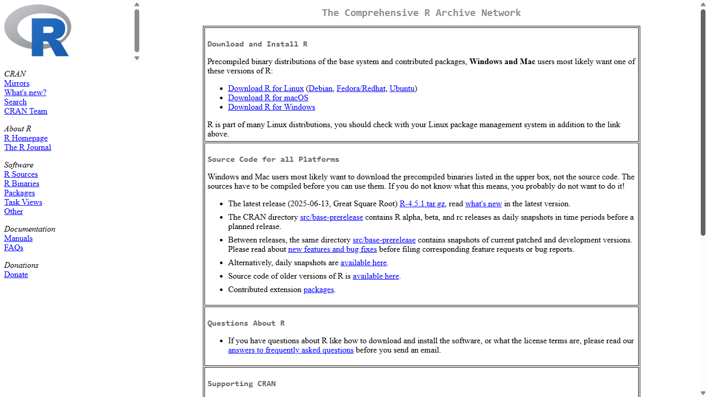
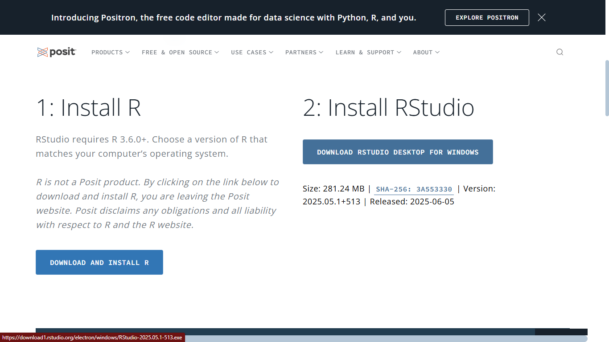

# Instala o pacote tidyverse, que inclui dplyr, ggplot2 e outros
install.packages("tidyverse")
# Instala o pacote para modelos lineares mistos
install.packages("lme4")
# Instala outros pacotes para modelos mistos
install.packages("lmerTest")
install.packages("nlme")2 Fundamentos de R
Para começar essa jornada, o primeiro passo é configurar o ambiente de trabalho. Isso envolve a instalação de dois softwares distintos, mas que trabalham juntos: R e RStudio. Compreender o funcionamento de cada um e como eles se interagem é fundamental para as próximas etapas.
2.1 O que são R e RStudio?
É comum que iniciantes confundam R e RStudio, mas esta distinção é crucial para o processo.
- R é a linguagem de programação e o ambiente de software para computação estatística e gráficos. Pode-se pensar que é o “motor” que executa todos os cálculos, análises e gera os gráficos. Além de tudo, é um projeto de código aberto, gratuito e mantido por uma vasta comunidade de desenvolvedores e estatísticos ao redor do mundo.
- RStudio é um Ambiente de Desenvolvimento Integrado (IDE, do inglês Integrated Development Environment). Se o R é o motor do carro, o RStudio1 é o painel, o volante, e todo o interior que torna a condução do carro uma experiência agradável e gerenciável. O RStudio fornece uma interface gráfica e amigável que organiza o trabalho em R, facilitando a escrita de scripts (arquivos de códigos), a visualização de gráficos, o gerenciamento de pacotes (bibliotecas) e muito mais. Embora seja possível utilizar o R sem o RStudio, a utilização do RStudio é fortemente recomendada, pois deixa o processo de análise muito mais interativo e organizado.

2.2 Instalação passo a passo
A instalação adequada dos programas é um pré-requisito crucial. A ordem de instalação é importante: R deve ser instalado antes do RStudio.
- Instalando o R:
- Acesse o site do Comprehensive R Archive Network (CRAN)2, que é o repositório oficial para o R e seus pacotes.
- Na página inicial, selecione o link de download para o seu sistema operacional (Linux, macOS ou Windows).
- Siga as instruções para baixar a versão mais recente (“base”). É crucial baixar a versão diretamente do CRAN, pois os gerenciadores de pacotes de alguns sistemas operacionais (como o
get-aptdo Ubuntu) podem fornecer versões desatualizadas. - Execute o arquivo de instalação baixado e siga as instruções padrão, aceitando as configurações padrão.

- Instalando o RStudio:
- Após a instalação do R, acesse o site da Posit e clique para baixar a versão gratuita do RStudio Desktop.
- Baixe o instalador apropriado para o seu sistema operacional.
- Execute o arquivo de instalação. O RStudio detectará automaticamente a instalação do R existente.

2.4 O conceito de pacotes
A grande força do R reside em seu ecossistema de pacotes. Um pacote é a coleção de funções, dados e documentação que estende as capacidades iniciais do R. Para qualquer tarefa estatística ou de manipulação de dados que se possa imaginar, provavelmente existe algum pacote que a facilita.
2.4.1 Instalando e Carregando Pacotes Essenciais
Existe uma distinção básica a ser realizada entre instalar e carregar um pacote.
- Instalação: É o ato de baixar o pacote do CRAN e instalá-lo no computador. Isso é realizado apenas uma vez para cada pacote.
- Carregamento: É o ato de carregar o pacote instalado em sua sessão do R de forma que as funções adicionais fiquem disponíveis para uso. Isso precisa ser feito toda vez que uma sessão no R é iniciada.
Para este material, os pacotes centrais são: tidyverse, lme4, lmerTest e nlme. Um dos métodos para instalar pacotes R no computador é por meio da função install.packages():
Após a instalação, para usar as funções de um pacote, é preciso carregá-lo com a função library():
library(tidyverse)Cabe ressaltar que, ao longo do uso de diversos pacotes, podem ocorrer conflitos de funções com o mesmo nome. Nesses casos, a solução mais prática é utilizar a notação pacote::funcao para indicar explicitamente ao R de qual biblioteca desejamos chamar a função.
2.5 Diretório de Trabalho e Projetos RStudio
O diretório de trabalho é a pasta no seu computador onde o R irá procurar por arquivos para ler e onde, também, salvará os arquivos criados (como gráficos, scripts e datasets modificados). É possível identificar o diretório atual através do comando getwd() e, embora também seja possível defini-la manualmente com a função setwd("caminho/para/sua/pasta"), essa prática não é aconselhável, visto que o uso de caminhos de arquivos absolutos torna o código não portável; ou seja, ele não irá funcionar se você mover a pasta do projeto ou tentá-la executá-lo em outro computador.
A solução moderna e robusta para esse problema é a utilização de Projetos RStudio. Um projeto RStudio (extensão .Rproj) é um arquivo que você cria dentro de uma pasta do seu projeto de pesquisa. Ao abrir um projeto, o RStudio automaticamente define o diretório de trabalho para aquela pasta. Isso garante que todos os caminhos de arquivo do seu código possam ser relativos à raiz do projeto, tornando sua análise totalmente reprodutível e compartilhável de forma eficaz. Outra maneira de criar projetos é através do próprio RStudio, através das seguintes instruções File > New Project > New Directory > New Project e nesta última etapa, você escolherá um nome para o projeto e a pasta de sua pesquisa, finalizando em Create Project. A criação de um projeto para cada análise de pesquisa é uma prática fundamental para a organização e a reprodutibilidade científica.
2.6 R Básico
A leitura desta sessão é aconselhada para o leitor que nunca teve contato com o R. Os tópicos introduzidos são especiais para a compreensão do que é um dataframe, a estrutura dos datasets dentro do R, e quais operações estarão sendo realizadas quando estivermos efetuando filtragens e modificações de suas colunas. Também são importantes para a compreensão do que é uma função no R.
2.6.1 Operadores Matemáticos
Os operadores matemáticos, também conhecidos por operadores binários, dentro do ambiente R soam como familiares. A Tabela 2.1 exibe os operadores mais básicos utilizados.
Para exemplificar como efetuar cálculos de expressões matemáticas no R, suponha que desenhamos calcular o valor de: \[2\times 2 + \frac{4 + 4}{2}.\] Para isso, escrevemos 2*2 + (4+4)/2 no console para determinarmos o resultado
2*2 + (4+4)/2[1] 8Warning: pacote 'knitr' foi compilado no R versão 4.4.3| Operadores | Descrição |
|---|---|
| + | Adição |
| - | Subtração |
| * | Multiplicação |
| / | Divisão |
| ^ | Exponenciação |
2.6.2 Objetos e funções
O R permite guardar valores dentro de um objeto. Um objeto é simplesmente um nome que guarda uma determinada informação na memória do computador, que é criado por meio do operador <-. Veja que no código a seguir
x <- 10 # Salvando "10" em "x"
x # Avaliando o objeto "x"[1] 10foi salvo que a informação que x carrega é o valor 10. Portanto, toda vez que o objeto x for avaliado, o R irá devolver o valor 10.
É importante ressaltar que há regras para a nomeação dos objetos, dentre elas, não começar com números. Assim, todos os seguintes exemplos são permitidos: x <- 1, x1 <- 1, meu_objeto <- 1, meu.objeto <- 1. Ainda, o R diferencia letras minúsculas de maiúsculas, então objetos como y e Y são diferentes.
Enquanto que os objetos são nomes que salvam informações de valores, funções são nomes que guardam informações de um código R, retornando algum resultado programado. A sintaxe básica de uma função é nome_funcao(arg1, arg2, ...). Os valores dentro dos parênteses são chamados por argumentos, que são informações necessárias para o bom funcionamento de uma função. Às vezes, uma função não necessita do fornecimento de argumentos específicos.
Uma função simples, porém útil, é a sum(). Ela consiste em somar os valores passados em seu argumento. Suponha que desejamos somar 1+2+3+4+5. Assim,
sum(1,2,3,4,5)[1] 15é possível reparar que o resultado é 15.
A classe de um objeto é muito importante na programação em R. É a partir disso que as funções e operadores conseguem entender o que fazer com cada objeto. Há uma infinidade de classes, dentre as mais conhecidas são: numeric, character, data.frame, logical e factor. Para averiguar o tipo de classe, a função class() retorna exatamente a classe do objeto.
class("a")[1] "character"class(1)[1] "numeric"class(mtcars)[1] "data.frame"class(TRUE)[1] "logical"2.6.3 Importanto dados
Uma atividade importante para qualquer análise estatística que vier ser feita no R é importante importar os dados para o ambiente de trabalho, que ficarão guardados dentro de um objeto no projeto RStudio – afinal, como faríamos as análises sem os dados? No contexto da Biologia, isso costuma significar ler arquivos com medidas de peso, contagens de indivíduos, medidas de comprimento etc., geralmente armazenados em formatos de texto (.csv ou .tsv) ou planilhas (.xlsx). As principais funções para cada ocasião de arquivo são:
- CSV com cabeçalho:
dados <- read.csv("dados.csv",
header = TRUE, # indica que há cabeçalho
sep = ",", # separador vírgula
stringsAsFactors = FALSE # evita conversão automática em fatores
)- TXT ou TSV com tabulação:
dados <- read.delim("dadostsv",
header = TRUE,
sep = "\t"
)- Planilhas no Excel (arquivos
.xlsx):
dados <- readxl::read_excel("dados.xlsx",
sheet = "Planilha1" # aqui você escolhe a planilha a ser lida
)Ressaltamos, neste caso, a necessidade da utilização da biblioteca readxl para que seja possível lermos planilhas no R.
2.6.4 Vetores e Data frames
Vetores são uma estrutura fundamental dentro do R, em especial, é a partir deles que os data frames são construídos. Por definição, são conjuntos indexados de valores e para criá-los, basta utilizar a função c() com valores separados por vírgula (ex.: c(1,2,4,10)). Para acessar um valor dentro de um determinado vetor, utiliza-se os colchetes []:
vetor <- c("a", "b", "c")
# Acessando valor "b"
vetor[2][1] "b"Um vetor só pode guardar um tipo de objeto e ele terá sempre a mesma classe dos objetos que guarda. Caso tentarmos misturar duas classes, o R vai apresentar o comportamento conhecido como coerção.
class(c(1,2,3))[1] "numeric"class(vetor)[1] "character"class(c(1,2,"a","b"))[1] "character"Neste caso, todos os elementos do vetor se transformaram em texto.
Assim, também, data frames são de extrema importância no R, visto que são os objetos que guardam os dados e são equivalentes a uma planilha do Excel. A principal característica é possuir linha e colunas. Em geral, as colunas são vetores de mesmo tamanho (ou dimensão). Um valor específico de um data frame pode ser acessado, também, via colchetes []:
class(mtcars)[1] "data.frame"mtcars[1,2][1] 6mtcars é um conjunto de dados muito conhecido na comunidade R.
2.6.5 Fatores
Fatores são uma classe de objetos no R criada para representar variáveis categóricas numericamente. A característica que define essa classe é o atributo levels, que representam as possíveis categorias de uma variável categórica.
A título de exemplificação, considere o objeto sexo que contém as informações do sexo de uma pessoa. As possibilidades são: F (feminino) e M (masculino). Por padrão, o R interpreta essa variável como texto (character), no entanto, é possível transformá-la em fator por meio da função as.factor().
sexo <- c("F", "F", "M", "M", "F")
class(sexo)[1] "character"# Transformando em fator
class(as.factor(sexo))[1] "factor"as.factor(sexo)[1] F F M M F
Levels: F MObserva-se que a linha adicional Levels: F M indicam as categorias. Por padrão, o R ordena esses níveis em ordem alfabética. Para facilitar os cálculos e análises, o R interpreta os níveis categóricos como sendo números distintos, sendo assim, dentro do nosso exemplo F representaria o número 0 e M representaria o 1.
2.6.6 Valores especiais
Valores como NA, NaN, Inf e NULL ocorrem frequentemente dentro do mundo da programação estatística no R. Em resumo:
NArepresenta a Ausência de Informação. Suponha que o vetoridadesque representa a idade de três pessoas. Uma situação que pode ocorrer éidades <- c(10, NA, NA). Portanto, não é sabido a idade das pessoas 2 e 3.NaNrepresenta indefinições matemáticas. Um exemplo típico é o valor \(\log{-1}\), do qual \(x = -1\) não pertence aos possíveis valores de saída da função logarítmica, gerando umNaN(Not a number).
log(-1)Warning in log(-1): NaNs produzidos[1] NaNInfrepresenta um número muito grande ou um limite matemático. Exemplos:
# Número muito grande
10^510[1] Inf# Limite matemático
1/0[1] InfNULLrepresenta a ausência de um objeto. Muitas vezes define-se um objeto como nulo para dizer ao R que não desejamos atribuir valores a ele.
2.6.7 Pedindo ajuda
Uma das coisas que intimidam novos programadores, independente da linguagem utilizada, é a ocorrência de erros. Neste sentido, o R pode ser um grande aliado, pois ele relata mensagens, erros e avisos sobre o código no console, como se fosse uma espécie de resposta e/ou comunicação. As situações são:
Error: em situações de erro legítimo aparecerá mensagens do tipoError in ...e tentará explicar o que há de errado. Nestas situações o código, geralmente, não é executado. Por exemplo:Error in ggplot(...) : could not find function "ggplot".Warning: em situações de avisos, o R exibirá uma mensagem do tipoWarning: ...e tentará explicar o motivo do aviso. Geralmente, o código será executado, mas com algumas ressalvas. Por exemplo:Warning: Removed 2 rows containing missing values (geom_point).Message: quando o texto exibido não se enquadra nas duas opções anteriores, dizemos que é apenas uma mensagem. Pense, nessa situação, que tudo está acontecendo como o esperado e está tudo bem.
Quando surgir qualquer uma dessas saídas, não estaremos perdidos, pois o R oferece mecanismos para encontrarmos respostas. Afinal, nem todo mundo decorou todas as funções ou argumentos. Os principais mecanismos são:
?funçãoouhelp(função)para consultar a documentação oficial.??termoehelp.search("termo")para buscas por palavras-chave.
Além disso, o RStudio oferece alguns Cheatsheets (resumo de códigos) que podem ajudar com determinados pacotes. E, por fim, existem grandes comunidade online, tais como: Stack Overflow e RStudio Community dos quais também podem serem úteis.
Existem outras IDEs que podem ser utilizadas no lugar do RStudio, como o Visual Studio Code. No entanto, focaremos nosso estudo utilizando o RStudio.↩︎
Um outro repositório conhecido na comunidade científica para pacotes com o intuítuo de modelagem na biologia, em especial na genética, é o Bioconductor.↩︎